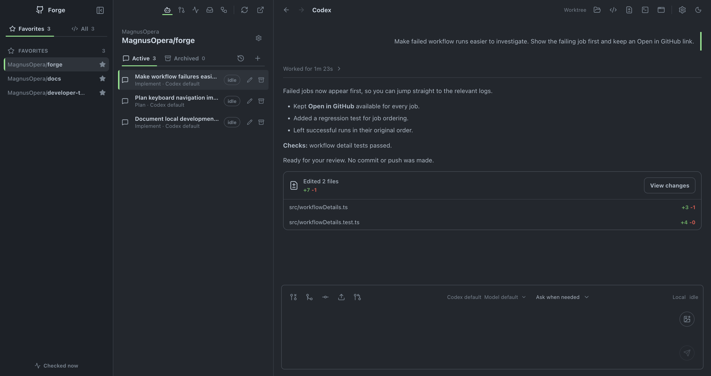

GitHub, ready to act.
Review pull requests, comment, manage labels, and enable auto-merge. Track issues, trigger workflows, and inspect failed jobs and logs without leaving your workspace.
Built for macOS · Powered by Codex
Codex, GitHub, worktrees, terminals, and code review in one desktop workspace. Plan a change, build locally or over SSH, and take it from first prompt to merge.
Apple Silicon · Open source · No Forge backend

Review pull requests, comment, manage labels, and enable auto-merge. Track issues, trigger workflows, and inspect failed jobs and logs without leaving your workspace.
Plan or implement with your choice of model and reasoning effort. Steer a running task, queue follow-ups, and handle questions and approvals in the conversation.
Search thread titles and conversation text across active or archived work. Ranked matches and excerpts help you pick up the right discussion without scrolling through history.
Start in an isolated worktree or choose a repository branch. Review diffs, squash or merge into the default branch, and resolve conflicts with Codex while keeping the same chat.
Choose a local checkout or a remote environment for each new thread. Use an integrated terminal in the thread’s checkout and keep its output alongside the conversation.
Detach conversations, pull requests, issues, or workflow views into independent native windows. Keep browsing in the main workspace and reattach an item when you’re ready.
Codex, inside Forge
Go from understanding a repository to working on it without leaving your workspace. Choose a starting branch or an isolated worktree, then keep the conversation, terminal, and code review together.
Set up CodexChoose Plan or Implement mode, adjust model and reasoning settings, and answer questions or approval requests in the conversation. Steer ongoing work or queue your next instructions.
Follow command output and file changes, inspect unified or split diffs, and open the worktree in your editor. Use Git quick actions when you’re ready to commit, push, or create a pull request.
Open an integrated terminal in the thread’s checkout. For work on another machine, connect Codex to your own environment over SSH.
Requires a separately installed, compatible Codex CLI and ChatGPT sign-in. Conversations and project settings are stored on your machine; Codex uses OpenAI for inference.
Detachable windows
Move a conversation into its own window while keeping your repositories and threads close by. Keep it on another display, or reattach it to the main workspace when you’re ready.
Your next change